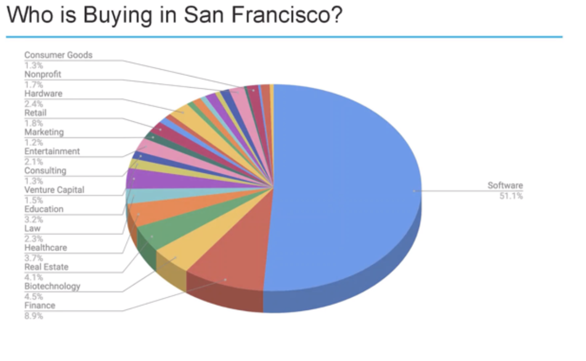

Good
This visualization comes from an article about Alaska’s Wildlife refuge and the ongoing debate to begin oil drilling in the protected area. The article specifically discusses the effects the effects a drilling project would have on the wildlife while telling a story of the author’s visit. In terms of expanding the island of knowledge, the visual does a sufficient job of giving an image that complements the text. What I liked about this image was the small area shaded dark green labeled “1002 Area”. It hadn’t been established in the article yet, but this is the area where the drilling could potentially be taking place. For me, at least, adding this area onto the visualization that appears early in the article expanded my shoreline of wonder because I wondered what it meant. Later this area plays a large part in the juxtaposition of the baby animals and the loss of land for them potential oil line would cause.
- It is truthful: For much of the information, the article cited the U.S. Fish and Wildlife Service.
- It is functional: The map is easy to read. The smaller image in the lower left hand corner makes it easier to see where in Alaska the Refuge is located.
- It is beautiful: The image is clean and simple.
- It is insightful: Without this visualization, it would be difficult to know what the author is talking about when describing his journey unless you are familiar with Alaska.
- The image is enlightening: The visualization helps to show how little land in Alaska already is protected. The introduction of the pipeline would create a slippery slope and lead to more shrinking if the refuge.
Poor

This visualization comes from an article about what types of people buy housing property in San
Francisco. The visualization didn’t add much in terms of the island of knowledge or the shoreline of wonder. However, the visualization was better than just having a list of numbers and no visual aid at all. It does help the audience understand that software workers bought the largest share of homes in 2018.
- It is truthful: Through some digging, I found that the data from the visualization comes from an annual survey of the Planning Department of the city and county of San Francisco.
- It is functional: It is functional if you view it as software homebuyers versus all other homebuyers. The smaller fractions are hard to read and identify.
- Is it beautiful: The visualization doesn’t seem special from any other chart similar to it.
- It is insightful: The chart is not very helpful in identifying or visualizing each specific group that is buying real estate. The pieces of the pie are too small to identify.
- The image is enlightening: The visual doesn’t necessarily help change minds for the better but it does help visualize who is buying property in the city.